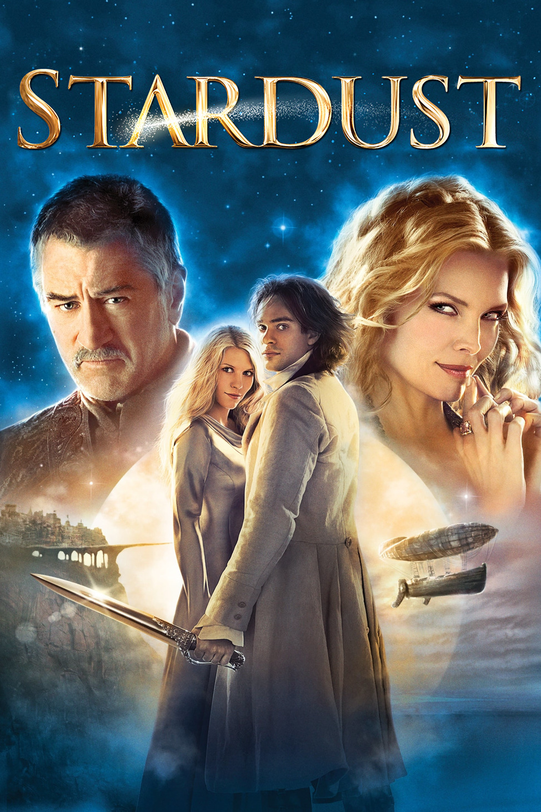

Мировая премьера: 10 августа 2007
Слоган: Сказка, которую не расскажешь на ночь.
Сюжет: Надеясь завоевать сердце красавицы, Тристан обещает принести ей упавшую звезду. В поисках необычного дара он отправляется за запретную стену, отделяющую мир людей от волшебного королевства, где обнаруживает, что упавшая звезда – вовсе не небесный камень, а прекрасная дева по имени Ивейн. Когда старая ведьма Ламия пытается украсть молодость Ивейн, Тристан должен защитить девушку во что бы то ни стало.
Режиссёр: Мэттью Вон
В основе: Роман Нила Геймана "Звёздная пыль" (Великобритания, 1999)
В ролях: Чарли Кокс, Клэр Дэйнс, Мишель Пфайффер
| Чарли Кокс | Тристан Торн |
| Клэр Дэйнс | Ивейн |
| Мишель Пфайффер | Ламия |
| Роберт Де Ниро | Капитан Шекспир |
| Марк Стронг | Принц Септимус |
| Сиенна Миллер | Виктория Форестер |
| Рики Джервэйс | Ферди |
| Джейсон Флеминг | Принц Праймус |
| Мелани Хилл | Сточная Сэл |
| Кейт Магован | Рабыня |
| Питер О'Тул | Король Штормхолда |
| Руперт Эверетт | Принц Секундус |
| Сара Александр | Эмпуза |
| Джоанна Сканлан | Мормо |
| Дэвид Келли | Страж |
| Натаниель Паркер | Данстан Торн |
| Декстер Флетчер | Тощий пират |
| Генри Кавилл | Хамфри |
| Дэвид Уоллиамс | Принц Секстус |
| Марк Хип | Принц Терциус |
| Джулиан Райнд-Татт | Принц Квартус |
| Бен Барнс | Юный Данстан Торн |
| Марк Уильямс | Билли |
Бюджет: $ 70 млн.
Кассовые сборы в США: $ 39 млн.
Кассовые сборы в мире: $ 138 млн.
Продолжительность: 2 ч. 1 мин.
Рейтинг: 7.6